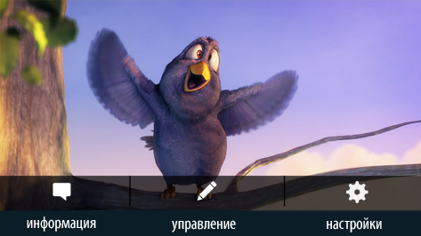

kinomatika
Программное обеспечение для индустрии Digital Signage
КИНОТЕАТРЫ
Киноматика в кинотеатрах это единая, интеллектуальная, полностью автоматизированная система управления медиа-контентом– расписанием в кассе, меню в concession-баре, рекламой в фойе, тач-панелями и видео-стенами. Система трансляции может быть построена всеми существующими на сегодняшний день способами - на многоканальных видеосерверах, с использованием IP- технологии или с помощью локальных медиа-плееров. Методы представления расписания посетителю, создавались на протяжении нескольких лет, при непосредственном участии технических специалистов ведущих российских киносетей. Система ориентирована на реалии российского кинобизнеса и с учетом всех возможных требований. Уже сейчас систему используют более 70% российских кинотеатров, признавая ее очевидные преимущества. Интеграция со всеми распространенными базами данных билетно-кассовых систем позволяет полностью автоматизировать систему. Как только изменился репертуар вашего кинотеатра, система автоматически сделает необходимые изменения на мониторах и загрузит весь необходимый для фильма контент с сайта Киноматика или другого ресурса.
КИНОТЕАТРЫ ПРИМЕРЫ ВНЕДРЕНИЙ

Это система является самым мощным среди программных продуктов на рынке Digital Signage. Весь функционал является результатом многолетней совместной работы нашей команды и инженеров ведущих кинотеатров России. Киноматика отслеживает все изменения в базе билетно-кассовой системы и отображает их на дисплеях, сопровождая показом трейлеров и постеров, а также возрастного ценза, длительности, описания и другой информации о фильме. Система обладает широчайшими возможностями для работы с расписанием

|
- Группировка и сортировка расписания по мониторам, например, по кол-ву сеансов, по алфавиту, по залам, по рейтингу, по количеству мониторов. (в окне превью показываем видео с примерами)
- Акцентирование внимания зрителя на различные элементы расписания, например, выделение цветом, размером или анимацией близжайщих, прошедших или текущих сеансов. (в окне превью показываем видео с примерами)
- Автоматический подбор графического оформления в зависимости от кол-ва фильмов в расписании: если фильмов становится меньше, все элементы расписания становятся крупнее и наоборот если фильмов в репертуаре становится больше. (в окне превью показываем видео с примерами)
- Автоскроллинг текста в названии фильма, жанре и всех остальных текстовых элементов, когда кол-во символов больше, чем предусмотрено в дизайне. (в окне превью показываем видео с примерами)
|
- Скрытие устаревших сеансов для отображения последующих. (в окне превью показываем видео с примерами)
- Использование в расписание как роликов, так и постеров, а так же слайдшоу постеров. (в окне превью показываем видео с примерами)
- Отображение времени оставшегося до начала близжайшего сеанса. (в окне превью показываем видео с примерами)
- Возможность запрета на показ трейлеров для фильмов с возрастным цензом 18+, система будет показывать только слайдшоу постеров. (в окне превью показываем видео с примерами)
- Бесплатный проекты оформления для расписания.
- Предоставлены все инструменты для создания собственных проектов оформления расписания или редактирования существующих
|


Для навигации используется дисплеи расположенные у входа в кинозалы. В зависимости от текущего времени, на каждом дисплее отображается информация о том, какой фильм будет идти в этом зале и оставшееся время до начала сеанса. После начала сеанса выводиться информация о том, что сеанс уже начался и время следующего сеанса. В периоды между сеансами отображается весь репертуар, который будет представлен сегодня в этом зале.
Помимо профессионального инструмента наша компания предоставляет своим клиентам важнейшую составляющую успеха Digital Signage – контент . Имея 15-летний опыт в создании профессионального фото и видеоконтента для рекламы продуктов питания и высоко-технологическую базу, мы можем обеспечить качественным контентом любого, даже очень требовательного клиента.
Для навигации используется дисплеи расположенные у входа в кинозалы. В зависимости от текущего времени, на каждом дисплее отображается информация о том, какой фильм будет идти в этом зале и оставшееся время до начала сеанса. После начала сеанса выводиться информация о том, что сеанс уже начался и время следующего сеанса. В периоды между сеансами отображается весь репертуар, который будет представлен сегодня в этом зале.
Видеостены в кинотеатрах эффективны для показа рекламы, расписания и динамического меню. Они привлекают внимание и …. Видеостены могут быть с неограниченным количеством дисплеев и различных конфигураций – линейные, квадратичные и мозаичные. Контент отображаемый на видеостене может быть любой – расписание сеансов, реклама, динамическое меню, ТВ-сигнал или сигнал с IP-камеры. Используя Киноматику вы можете создавать собственные схемы отображения контента, например, на каждом дисплее видеостены с конфигурацией 3*3, выводить расписание определенного фильма или зала, затем, через некоторое время, на всей видеостене демонстрировать трейлер фильма, а после него, разбив видеостену на 3 вертикальных блока отображать в каждом постеры фильмов. Отличительной особенностью является возможность вывода на каждый дисплей картинку безупречного качества, без растяжения и пикселизации, с разрешением HD/Full-HD вне зависимости от количества дисплеев. И это вне зависимости от того показывает ли каждый дисплей только свою информацию или вся видеостена объединена в одно визуальное пространство. Такой результат достигается методом склейки в реальном времени контента из нескольких частей и синхронизацией всех дисплеев в видестене.
Установленный в фойе кинотеатра или в торговом центре, touch-киоск Киноматика предоставит полный объем информации о кинотеатре, его репертуаре, расписании, схеме залов, ценах на билеты, рекламных акциях, меню концешн бара, а также вакансиях кинотератра и новостях. Взаимодействие с посетителем происходит посредством легких прикосновений к поверхности экрана. Для всех элементов навигации настраивается анимация, реагирующая на прикосновение. Использование видео-контента высокого разрешения, наряду с автоматическим обновлением контента, делает изображение безупречным и информативным. Дисплей тач-коиска может быть установлен в отдельную стойку или тумбу, выполненную по индивидуальному эскизу, с использованием фирменного стиля и символики кинотеатра.
Это система является самым мощным среди программных продуктов на рынке Digital Signage. Весь функционал является результатом многолетней совместной работы нашей команды и инженеров ведущих кинотеатров России. Киноматика отслеживает все изменения в базе билетно-кассовой системы и отображает их на дисплеях, сопровождая показом трейлеров и постеров, а также возрастного ценза, длительности, описания и другой информации о фильме. Система обладает широчайшими возможностями для работы с расписанием
Для навигации используется дисплеи расположенные у входа в кинозалы. В зависимости от текущего времени, на каждом дисплее отображается информация о том, какой фильм будет идти в этом зале и оставшееся время до начала сеанса. После начала сеанса выводиться информация о том, что сеанс уже начался и время следующего сеанса. В периоды между сеансами отображается весь репертуар, который будет представлен сегодня в этом зале.
Помимо профессионального инструмента наша компания предоставляет своим клиентам важнейшую составляющую успеха Digital Signage – контент . Имея 15-летний опыт в создании профессионального фото и видеоконтента для рекламы продуктов питания и высоко-технологическую базу, мы можем обеспечить качественным контентом любого, даже очень требовательного клиента.
МЕДИЦИНСКИЕ УЧЕРЕЖДЕНИЯ
Киноматика это профессиональный инструмент Digital Signage для создания сети вещания рекламной, социальной и служебной инфоормации на дисплеях установленных в поликлиниках, стоматоллогических клиниках и реабилитационных центрах. Вещание осуществляется на дисплеях расположеных в зоне ресепшн и залах ожидания, в коридорах, а также перед, и в самих кабинетах врачей. Активное использование Digital Signage в медицинских учреждениях создает имидж медицинского учреждения как высокотехнологичной инновационной организации, заботящейся об удобстве пациентов и персонала, и значительно снижает ощущаемое время ожидания посетителя, позволяя провести его с пользой. Возможности системы позволяют реализовать следующие задачи: Проведение рекламных компаний, обеспечивающее стабильный доход за счет демонстрации коммерческой рекламы поставщиков медицинских услуг и препаратов. интенсификация продаж, благодаря продвижению программ клиники, дополнительных услуг и продуктов организации. Создание дополнительного канала общения с пациентами с помощью дисплеев - информирование пациентов об инновационных препаратах, методиках, оборудовании и специалистах клиники. Предоставление оперативной информации в случае эпидемий, и демонстрация статистических данных. размещение приветственных сообщений, поздравлений пациентов с важными событиями, информировать о семинарах, конференциях, консилиумах, проходящих в клинике. Обеспечение безопасности пациентов: передача экстренных сообщений в случае необходимости Создание внутрикорпоративной коммуникации с удобным общением руководства с сотрудниками клиники. Возможность представить коллективу нового сотрудника, отправить праздничное поздравление или экстренное сообщение всем работникам.
МЕДИЦИНСКИЕ УЧЕРЕЖДЕНИЯ ПРИМЕРЫ ВНЕДРЕНИЙПомимо профессионального инструмента наша компания предоставляет своим клиентам важнейшую составляющую успеха Digital Signage – контент . Имея 15-летний опыт в создании профессионального фото и видеоконтента для рекламы продуктов питания и высоко-технологическую базу, мы можем обеспечить качественным контентом любого
Методы представления расписания посетителю, создавались на протяжении нескольких лет, при непосредственном участии технических специалистов ведущих российских киносетей. Система ориентирована на реалии российского кинобизнеса и с учетом всех возможных требований. Уже сейчас систему используют более 70% российских кинотеатров, признавая ее очевидные преимущества. Интеграция со всеми распространенными базами данных билетно-кассовых систем позволяет полностью автоматизировать систему. Как только изменился репертуар вашего кинотеатра, система автоматически сделает необходимые изменения на мониторах и загрузит весь необходимый для фильма контент с сайта Киноматика или другого ресурса.
Это система является самым мощным среди программных продуктов на рынке Digital Signage. Весь функционал является результатом многолетней совместной работы нашей команды и инженеров ведущих кинотеатров России. Киноматика отслеживает все изменения в базе билетно-кассовой системы и отображает их на дисплеях, сопровождая показом трейлеров и постеров, а также возрастного ценза, длительности, описания и другой
Это система является самым мощным среди программных продуктов на рынке Digital Signage. Весь функционал является результатом многолетней совместной работы нашей команды и инженеров ведущих кинотеатров России. Киноматика отслеживает все изменения в базе билетно-кассовой системы и отображает их на дисплеях, сопровождая показом трейлеров и постеров, а также возрастного ценза, длительности, описания и другой информации о фильме. Система обладает широчайшими возможностями для работы с расписанием
Для навигации используется дисплеи расположенные у входа в кинозалы. В зависимости от текущего времени, на каждом дисплее отображается информация о том, какой фильм будет идти в этом зале и оставшееся время до начала сеанса. После начала сеанса выводиться информация о том, что сеанс уже начался и время следующего сеанса. В периоды между сеансами отображается весь репертуар, который будет представлен сегодня в этом зале.
Помимо профессионального инструмента наша компания предоставляет своим клиентам важнейшую составляющую успеха Digital Signage – контент . Имея 15-летний опыт в создании профессионального фото и видеоконтента для рекламы продуктов питания и высоко-технологическую базу, мы можем обеспечить качественным контентом любого, даже очень требовательного клиента.
УЧЕБНЫЕ ЗАВЕДЕНИЯ
Киноматика в кинотеатрах это единая, интеллектуальная, полностью автоматизированная система управления медиа-контентом– расписанием в кассе, меню в concession-баре, рекламой в фойе, тач-панелями и видео-стенами. Система трансляции может быть построена всеми существующими на сегодняшний день способами - на многоканальных видеосерверах, с использованием IP- технологии или с помощью локальных медиа-плееров. Методы представления расписания посетителю, создавались на протяжении нескольких лет, при непосредственном участии технических специалистов ведущих российских киносетей. Система ориентирована на реалии российского кинобизнеса и с учетом всех возможных требований. Уже сейчас систему используют более 70% российских кинотеатров, признавая ее очевидные преимущества. Интеграция со всеми распространенными базами данных билетно-кассовых систем позволяет полностью автоматизировать систему. Как только изменился репертуар вашего кинотеатра, система автоматически сделает необходимые изменения на мониторах и загрузит весь необходимый для фильма контент с сайта Киноматика или другого ресурса.
УЧЕБНЫЕ ЗАВЕДЕНИЯ ПРИМЕРЫ ВНЕДРЕНИЙЭто система является самым мощным среди программных продуктов на рынке Digital Signage. Весь функционал является результатом многолетней совместной работы нашей команды и инженеров ведущих кинотеатров России. Киноматика отслеживает все изменения в базе билетно-кассовой системы и отображает их на дисплеях, сопровождая показом трейлеров и постеров, а также возрастного ценза, длительности, описания и другой информации о фильме.
Установленный в фойе кинотеатра или в торговом центре, touch-киоск Киноматика предоставит полный объем информации о кинотеатре, его репертуаре, расписании, схеме залов, ценах на билеты, рекламных акциях, меню концешн бара, а также вакансиях кинотератра и новостях. Взаимодействие с посетителем происходит посредством легких прикосновений к поверхности экрана. Для всех элементов навигации настраивается анимация, реагирующая на прикосновение. Использование видео-контента высокого разрешения, наряду с автоматическим обновлением контента, делает изображение безупречным и информативным. Дисплей тач-коиска может быть установлен в отдельную стойку или тумбу, выполненную по индивидуальному эскизу, с использованием фирменного стиля и символики кинотеатра.
Визуальное оформление и качественный контент – важнейшие составляющие успешного использования динамического меню. Нет никакого смысла приобретать дисплеи и показывать на них статичное меню! И даже анимация изображениями продуктов не оправдывает ожиданий хорошего среднего чека. Для этого есть лайтбоксы! Только за счет качественного видео-контента и продуманного оформления вашего меню Вы сможете эффектно представить свой ассортимент посетителю и повысить продажи. С Киноматикой Вы никак не ограничены в своих желаниях – можете сделать выбор.
Это система является самым мощным среди программных продуктов на рынке Digital Signage. Весь функционал является результатом многолетней совместной работы нашей команды и инженеров ведущих кинотеатров России. Киноматика отслеживает все изменения в базе билетно-кассовой системы и отображает их на дисплеях, сопровождая показом трейлеров и постеров, а также возрастного ценза, длительности, описания и другой информации о фильме. Система обладает широчайшими возможностями для работы с расписанием
Для навигации используется дисплеи расположенные у входа в кинозалы. В зависимости от текущего времени, на каждом дисплее отображается информация о том, какой фильм будет идти в этом зале и оставшееся время до начала сеанса. После начала сеанса выводиться информация о том, что сеанс уже начался и время следующего сеанса. В периоды между сеансами отображается весь репертуар, который будет представлен сегодня в этом зале.
Помимо профессионального инструмента наша компания предоставляет своим клиентам важнейшую составляющую успеха Digital Signage – контент . Имея 15-летний опыт в создании профессионального фото и видеоконтента для рекламы продуктов питания и высоко-технологическую базу, мы можем обеспечить качественным контентом любого, даже очень требовательного клиента.
РЕСТОРАНЫ БАРЫ
Киноматика для ресторанов, баров и кафе это решение для Digital Signage, реализованное в сотнях объектов РФ и СНГ. Digital Signage мощный инструмент для продвижения нового ассортимента блюд и получения дополнительный дохода от показа рекламный роликов сторонних рекламных агентств. Дисплеи показывающие видеоряд с эмоционально приятным и “вкусным” содержанием привлекают внимание посетителя к предлагаемым блюдам увеличивая продажи и создают особую атмосферу для него. Активное применение Digital Signage в ресторанах позволяет: - повысить средний чек - увеличить продажи высокоприбыльных товаров - увеличить оборот продуктов - повысить гибкость в ценообразовании - повысить удовлетворённость посетителя - увеличить продажи промоутируемых блюд - повысить операционную эффективность
БИЗНЕС-ЦЕНТРЫ
Установленный в зоне reception, touch-киоск Киноматика предоставит полный объем информации о бизнес-центре и его арендаторах, а также о вакансиях и новостях. Взаимодействие с посетителем происходит посредством легких прикосновений к поверхности экрана. Для всех элементов навигации настраивается анимация, реагирующая на прикосновение. Использование видео-контента высокого разрешения, наряду с автоматическим обновлением контента, делает изображение безупречным и информативным. Дисплей тач-коиска может быть установлен в отдельную стойку или тумбу, выполненную по индивидуальному эскизу, с использованием фирменного стиля и символики бизнес-центра.
МУЗЕИ
Расписание экспозиций и выставок, навигация, информирования о событиях музея, тач-киоски и презентации на проекционных экранах и видео-стенах. Вот только некоторые из возможных задач, выполняемых Киноматикой. Возможность автоматизации многих процессов, связанных с показом оперативной информации о мероприятиях музея, наряду с возможностью ручного, но очень понятного и простого управления показом презентаций не усложняет, а делает проще работу сотрудников музея. Система трансляции может быть построена всеми существующими на сегодняшний день способами - на многоканальных видеосерверах, на IP- технологии и с помощью локальных медиа-плееров.
МЕДИЦИНА
Киноматика это профессиональный инструмент Digital Signage для создания сети вещания рекламной, социальной и служебной инфоормации на дисплеях установленных в поликлиниках, стоматоллогических клиниках и реабилитационных центрах. Вещание осуществляется на дисплеях расположеных в зоне ресепшн и залах ожидания, в коридорах, а также перед, и в самих кабинетах врачей. Активное использование Digital Signage в медицинских учреждениях создает имидж медицинского учреждения как высокотехнологичной инновационной организации, заботящейся об удобстве пациентов и персонала, и значительно снижает ощущаемое время ожидания посетителя, позволяя провести его с пользой. Возможности системы позволяют реализовать следующие задачи: Проведение рекламных компаний, обеспечивающее стабильный доход за счет демонстрации коммерческой рекламы поставщиков медицинских услуг и препаратов. интенсификация продаж, благодаря продвижению программ клиники, дополнительных услуг и продуктов организации. Создание дополнительного канала общения с пациентами с помощью дисплеев - информирование пациентов об инновационных препаратах, методиках, оборудовании и специалистах клиники. Предоставление оперативной информации в случае эпидемий, и демонстрация статистических данных. размещение приветственных сообщений, поздравлений пациентов с важными событиями, информировать о семинарах, конференциях, консилиумах, проходящих в клинике. Обеспечение безопасности пациентов: передача экстренных сообщений в случае необходимости Создание внутрикорпоративной коммуникации с удобным общением руководства с сотрудниками клиники. Возможность представить коллективу нового сотрудника, отправить праздничное поздравление или экстренное сообщение всем работникам.
Это система является самым мощным среди программных продуктов на рынке Digital Signage. Весь функционал является результатом многолетней совместной работы нашей команды и инженеров ведущих кинотеатров России. Киноматика отслеживает все изменения в базе билетно-кассовой системы и отображает их на дисплеях, сопровождая показом трейлеров и постеров, а также возрастного ценза, длительности, описания и другой информации о фильме.
Это система является самым мощным среди программных продуктов на рынке Digital Signage. Весь функционал является результатом многолетней совместной работы нашей команды и инженеров ведущих кинотеатров России. Киноматика отслеживает все изменения в базе билетно-кассовой системы и отображает их на дисплеях, сопровождая показом трейлеров и постеров, а также возрастного ценза, длительности, описания и другой информации о фильме.
Установленный в фойе кинотеатра или в торговом центре, touch-киоск Киноматика предоставит полный объем информации о кинотеатре, его репертуаре, расписании, схеме залов, ценах на билеты, рекламных акциях, меню концешн бара, а также вакансиях кинотератра и новостях. Взаимодействие с посетителем происходит посредством легких прикосновений к поверхности экрана. Для всех элементов навигации настраивается анимация, реагирующая на прикосновение. Использование видео-контента высокого разрешения, наряду с автоматическим обновлением контента, делает изображение безупречным и информативным. Дисплей тач-коиска может быть установлен в отдельную стойку или тумбу, выполненную по индивидуальному эскизу, с использованием фирменного стиля и символики кинотеатра.
Киноматика – интелектуальная система вещания Digital Signage, выходящая за рамки традиционных маркетинговых коммуникаций, и включающая в себя инструменты цифрового мерчандайзинга в точках продаж – Торговых и Аптечных сетях, АЗС. Главное преимущество Digital Signage перед традиционными видами маркетинговых коммуникаций, заключается в возможности постоянного управления контентом. Контент может состоять из видеоизображения, анимационных блоков, текстовых сообщений, появляющихся в любом виде и последовательности. Киноматика позволяет расширить возможности Digital Signage в ритейле.
МУЗЕИ
Расписание экспозиций и выставок, навигация, информирования о событиях музея, тач-киоски и презентации на проекционных экранах и видео-стенах. Вот только некоторые из возможных задач, выполняемых Киноматикой. Возможность автоматизации многих процессов, связанных с показом оперативной информации о мероприятиях музея, наряду с возможностью ручного, но очень понятного и простого управления показом презентаций не усложняет, а делает проще работу сотрудников музея. Система трансляции может быть построена всеми существующими на сегодняшний день способами - на многоканальных видеосерверах, на IP- технологии и с помощью локальных медиа-плееров.
Киноматика для ресторанов, баров и кафе это решение для Digital Signage, реализованное в сотнях объектов РФ и СНГ. Digital Signage мощный инструмент для продвижения нового ассортимента блюд и получения дополнительный дохода от показа рекламный роликов сторонних рекламных агентств. Дисплеи показывающие видеоряд с эмоционально приятным и “вкусным” содержанием привлекают внимание посетителя к предлагаемым блюдам увеличивая продажи и создают особую атмосферу для него.
Киноматика разработана как система позволяющая реализовать самые сложные визуальные и технические задачи, но не требующая специальных навыков для ее управления. Управлять трансляцией можно с любого компьютера и даже с планшетов или смартфонов. Для реализации трансляции могут быть использованы как недорогие и компактные медиа-плеера, размещенные на самом дисплее, так и многоканальные видеосервера, в том числе и с использованием IP- технологии.
Помимо профессионального инструмента наша компания предоставляет своим клиентам важнейшую составляющую успеха Digital Signage – контент . Имея 15-летний опыт в создании профессионального фото и видеоконтента для рекламы продуктов питания и высоко-технологическую базу, мы можем обеспечить качественным контентом любого, даже очень требовательного клиента.
КИНОТЕАТРЫ
Киноматика в кинотеатрах это единая, интеллектуальная, полностью автоматизированная система управления медиа-контентом– расписанием в кассе, меню в concession-баре, рекламой в фойе, тач-панелями и видео-стенами. Система трансляции может быть построена всеми существующими на сегодняшний день способами - на многоканальных видеосерверах, с использованием IP- технологии или с помощью локальных медиа-плееров. Методы представления расписания посетителю, создавались на протяжении нескольких лет, при непосредственном участии технических специалистов ведущих российских киносетей. Система ориентирована на реалии российского кинобизнеса и с учетом всех возможных требований. Уже сейчас систему используют более 70% российских кинотеатров, признавая ее очевидные преимущества. Интеграция со всеми распространенными базами данных билетно-кассовых систем позволяет полностью автоматизировать систему. Как только изменился репертуар вашего кинотеатра, система автоматически сделает необходимые изменения на мониторах и загрузит весь необходимый для фильма контент с сайта Киноматика или другого ресурса.
БИЗНЕС-ЦЕНТРЫ
Установленный в зоне reception, touch-киоск Киноматика предоставит полный объем информации о бизнес-центре и его арендаторах, а также о вакансиях и новостях. Взаимодействие с посетителем происходит посредством легких прикосновений к поверхности экрана. Для всех элементов навигации настраивается анимация, реагирующая на прикосновение. Использование видео-контента высокого разрешения, наряду с автоматическим обновлением контента, делает изображение безупречным и информативным. Дисплей тач-коиска может быть установлен в отдельную стойку или тумбу, выполненную по индивидуальному эскизу, с использованием фирменного стиля и символики бизнес-центра.
УЧЕБНЫЕ ЗАВЕДЕНИЯ
Киноматика в кинотеатрах это единая, интеллектуальная, полностью автоматизированная система управления медиа-контентом– расписанием в кассе, меню в concession-баре, рекламой в фойе, тач-панелями и видео-стенами. Система трансляции может быть построена всеми существующими на сегодняшний день способами - на многоканальных видеосерверах, с использованием IP- технологии или с помощью локальных медиа-плееров. Методы представления расписания посетителю, создавались на протяжении нескольких лет, при непосредственном участии технических специалистов ведущих российских киносетей. Система ориентирована на реалии российского кинобизнеса и с учетом всех возможных требований. Уже сейчас систему используют более 70% российских кинотеатров, признавая ее очевидные преимущества. Интеграция со всеми распространенными базами данных билетно-кассовых систем позволяет полностью автоматизировать систему. Как только изменился репертуар вашего кинотеатра, система автоматически сделает необходимые изменения на мониторах и загрузит весь необходимый для фильма контент с сайта Киноматика или другого ресурса.
РЕСТОРАНЫ БАРЫ
Киноматика для ресторанов, баров и кафе это решение для Digital Signage, реализованное в сотнях объектов РФ и СНГ. Digital Signage мощный инструмент для продвижения нового ассортимента блюд и получения дополнительный дохода от показа рекламный роликов сторонних рекламных агентств. Дисплеи показывающие видеоряд с эмоционально приятным и “вкусным” содержанием привлекают внимание посетителя к предлагаемым блюдам увеличивая продажи и создают особую атмосферу для него. Активное применение Digital Signage в ресторанах позволяет: - повысить средний чек - увеличить продажи высокоприбыльных товаров - увеличить оборот продуктов - повысить гибкость в ценообразовании - повысить удовлетворённость посетителя - увеличить продажи промоутируемых блюд - повысить операционную эффективность
ВИДЕОСТЕНЫ
Для показа развлекательного контента и рекламы используются дисплеи размещенные в залах, в витринах и у входа в заведение. На дисплеях в залах отображается развлекательный контент, например, спутниковая или IP-трансляция ТВ-программ, с отображением поверх изображения рекламных баннеров промотируемых блюд и спец-предложений. (показываем превью) Развлекательный контент можно заменить показом процесса приготовления блюд, конечно же, в заранее отредактированном, более «аппетитном» виде (показываем превью) Показ рекламы сторонних рекламных агентств осуществляется методом врезки в трансляцию рекламных блоков. Показ рекламных блоков осуществляется по созданному плей-листу. (показываем превью) Дисплеи размещенные в витринах и у входа в заведение используются для привлечения новых посетителей. На них отображается спецпредложения и, информация о развлекательных программах или рекламных акциях заведения. (показываем превью)
Киноматика отслеживает все изменения в базе билетно-кассовой системы и отображает их на дисплеях, сопровождая показом контента связанного с мероприятиями. Также демонстрируется длительность, описание и любая иная сопроводительная информация. Система обладает широчайшими возможностями для работы с расписанием : Группировка и сортировка расписания по мониторам, например, по алфавиту , по датам, по рейтингу, по количеству мониторов. (в окне превью показываем видео с примерами и комментами) Выделение цветом, размером или анимацией ближайших, прошедших или текущих мероприятий. (в окне превью показываем видео с примерами и комментами) Автоматический подбор графического оформления в зависимости от кол-ва мероприятий в расписании: если их становиться меньше, все элементы расписания становятся крупнее и наоборот если количество мероприятий на день становиться больше. (в окне превью показываем видео с примерами и комментами) Автоскроллинг текста во всех остальных текстовых элементах, когда кол-во символов больше, чем предусмотрено в дизайне. (в окне превью показываем видео с примерами и комментами)
Визуальное оформление и качественный контент – важнейшие составляющие успешного использования динамического меню. Нет никакого смысла приобретать дисплеи и показывать на них статичное меню! И даже анимация изображениями продуктов не оправдывает ожиданий хорошего среднего чека. Для этого есть лайтбоксы! Только за счет качественного видео-контента и продуманного оформления вашего меню Вы сможете эффектно представить свой ассортимент посетителю и повысить продажи. С Киноматикой Вы никак не ограничены в своих желаниях – можете сделать выбор
РАЗВЛЕЧЕНИЕ И РЕКЛАМА
Динамические менюборды Динамические менюборды (или по другому электронное меню) в основном используются в ресторанах быстрого питания. На дисплеях размещенных вдоль линии раздачи демонстрируется видео и фото блюд, закусок, и напитков с описанием и ценой. (показываем превью) Киноматика позволяет без использования дорогого дополнительного оборудования объединять любое количество дисплеев в одно визуальное пространство для показа рекламного контента нестандартного разрешения, например на линейной видеостене 10*1 (10 мониторов в линию) можно отобразить контент разрешением 19200*1080px . Предкассовые дисплеи. Предкассовые дисплеи в основном используются в ресторанах быстрого питания. Это небольшие дисплеи, со встроенным медиа-плеером и диагональю 19-21’’, расположенные вдоль линии раздачи. Дисплеи отображают спецпредложения и рекламные акции. (показываем превью) Спутниковое и кабельное ТВ Киноматика позволяет использовать внешние сигналы с карты захвата и спутникового, кабельного или IP-телевидения. Вы можете размещать поверх внешнего сигнала любую информацию – текст, графику, RSS-новости, а также включать в трансляцию собственные рекламные блоки. Благодаря не сложной системе управления пользователь может выбирать нужные ТВ-каналы как с компьютера или планшета, так и с пульта STB-приставки.
Киноматика позволяет использовать внешние сигналы с карты захвата и спутникового, кабельного или IP-телевидения. Вы можете размещать поверх внешнего сигнала любую информацию – текст, графику, RSS-новости, а также включать в трансляцию собственные рекламные блоки. Благодаря не сложной системе управления пользователь может выбирать нужные ТВ-каналы как с компьютера или планшета, так и с пульта STB-приставки.
Предкассовые дисплеи в основном используются в ресторанах быстрого питания. Это небольшие дисплеи, со встроенным медиа-плеером и диагональю 19-21’’, расположенные вдоль линии раздачи. Дисплеи отображают спецпредложения и рекламные акции. (показываем превью)
применяемые технологии

Киноматика разработана как система позволяющая реализовать самые сложные задачи, но не требующая специальных навыков для ее управления. Управлять трансляцией можно с любого компьютера и даже с планшетов или смартфонов. Для реализации трансляции могут быть использованы как недорогие
оставьте заявку на просчет вашего КП
kinomatika
обработка заявок в течении 1 часа